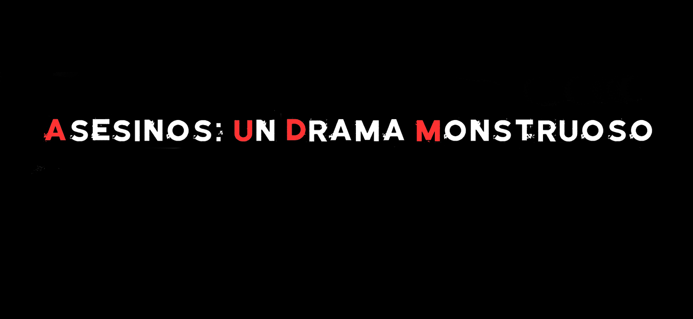
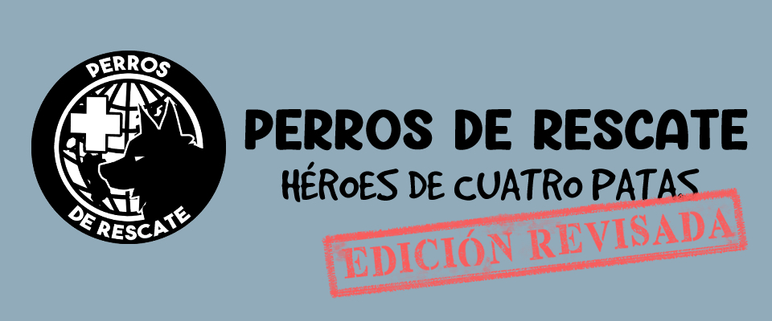

Retorno a Sarnath
Esta es una historia sobre ti, tus recuerdos y este lugar que corrompe a todo aquel que lo profana.
Para: 2 participantes (incluyendo narrador/a). Duración: 2 a 3 horas por sesión. Edad: a partir de los 15 años.
Esta es una historia sobre ti, tus recuerdos y este lugar que corrompe a todo aquel que lo profana.
Para: 2 participantes (incluyendo narrador/a). Duración: 2 a 3 horas por sesión. Edad: a partir de los 15 años.
Y despues de todo, el monstruo siempre fue el humano
Para: 2 participantes(1 director/a y 1 jugador/a) Duración: 2 a 3 horas por sesión. Edad: Mayores de 18 años.
un perro rescatista y estas en la primera línea, luchando contra el tiempo para ayudar a aquellos que te necesitan. ¿estás preparado para este desafío?
Para: 3 a 4 jugadores/as Duración: 2 a 3 horas por sesión. Edad: Mayores de 10 años.